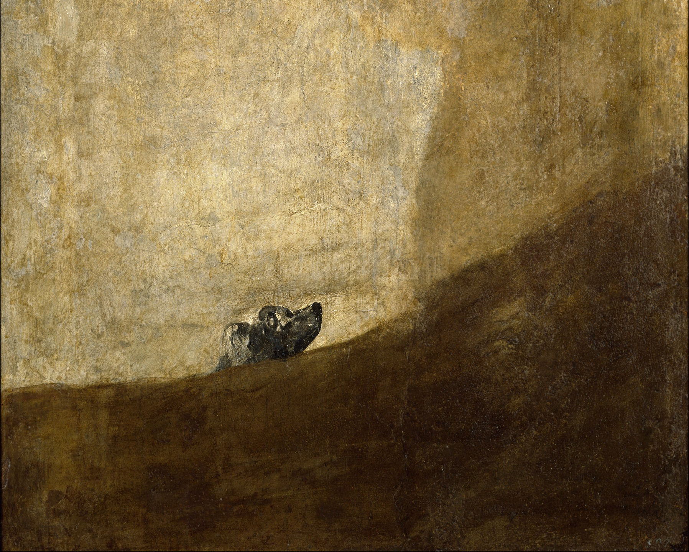
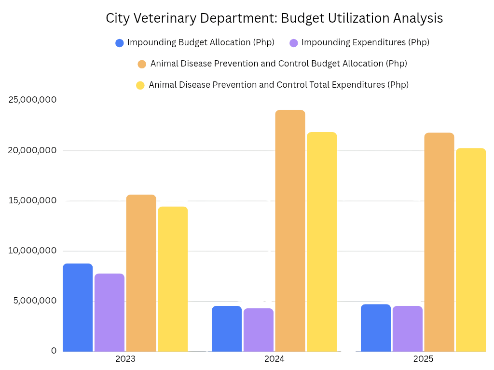
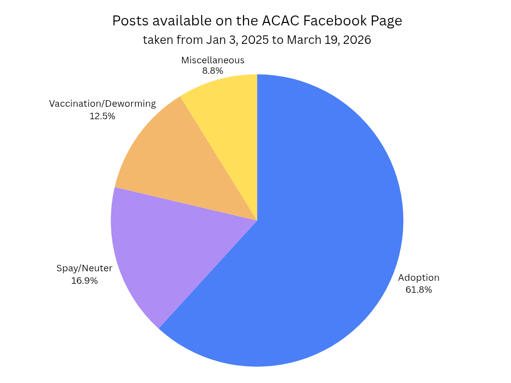
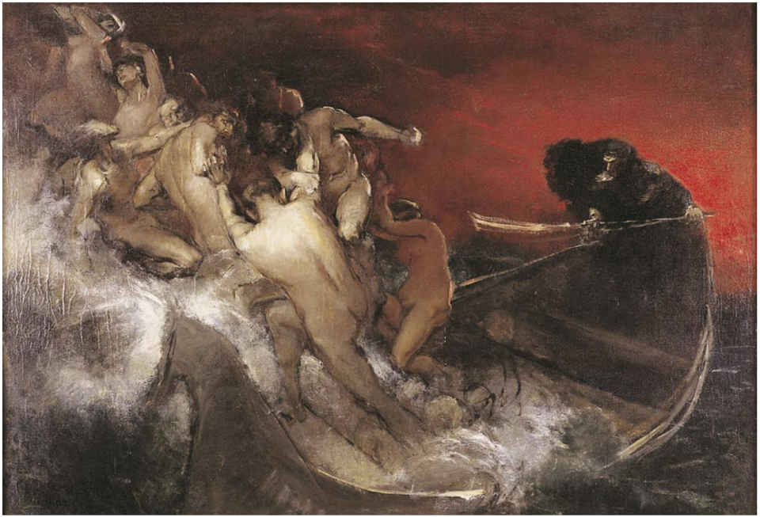

The National Shrine of Our Lady of Guadalupe just celebrated its 74th anniversary alongside the centenary Eucharistic celebration of the Solemnity of Christ the King. Its late afternoon interval between the masses was quiet with only a small number of devotees kneeling on the pews. Some had troubled expressions. Some were too concentrated in their prayers.
Beyond the Parish exists a larger religious reality. 85.6 million Filipinos are Roman Catholics, ranking third among the world's largest Catholic populations based on the World Population Review. Even on regular days, people visit the Church and each one carries a silent weight.
During the pandemic, these halls barely felt the footsteps of people. Only the sun peers and filters through the windows during downtime. In 2022, Metro Manila was officially declared under Alert Level 1 therefore capacity caps or quarantine classifications were no longer present. However, the country was still under a State of Public Health Emergency. The Church underwent societal reintegration to adjust to the new normal.
The Archdiocese of Manila appointed Rev. Fr. Carlos P. Reyes as Rector of the Church on October 13, 2022. "Many of our volunteers are poor. And now, we're only finding out about the volunteers that caught the virus. We caught Covid, but we survived. I was nervous at the time, because by July, I had Covid. Another thing, around three people have died. We're just finding out after it happened [...] one volunteer—he had never shown up again. The other one died in their home," Rev. Fr. Reyes said.
"The funds diminish. I've experienced it as well. I even resorted to begging," Maria said, name changed to protect the source's identity. In her 13 years of servitude to the Church, not once has she received any form of compensation. Between 2018 and 2023, household expenses rose from ₱238,750 annually to ₱258,050 reported by the PSA Family Income and Expenditure survey.
"I don't know any volunteers that resorted to begging," Rev. Fr. Reyes said. "I can't invent data that never reached me," he added.
"We have never received any amount. We are voluntarily working here. We don't deserve money, [...] It is the money of the people," she said. Layministers, church greeters, collectors, and most of the staff during the mass are not incentivized. Only a handful are compensated with actual wages.
Rev. Fr. Reyes saw the Church's financial status and found that they weren't breaking even. The Parish resorted to selling columbariums—"a finite resource that would eventually run out." The revenue should've gone to renovations, but instead went into operational expenses.
Statistics from the 2025 World Giving Report showed that Filipinos donate about 0.27 percent of their income specifically to religious causes. 30 percent of their charitable donations are directed toward religious organizations or causes. "No one is going to Church, and we only rely on donations," he said.
"Nonetheless, there's really divine providence," Rev. Fr. Reyes said. Money randomly comes into the Church's financial accounts. Donors without revealing their names would leave large sums. "An example is the 250,000 pesos we used. I don't know where it came from," he added.
"The richest church is in Quiapo," Maria said. "They don't know that there's a miracle here too. I have witnessed it myself," she added.
Maria gestured to the flower arrangement by the altar. "We never ask for flowers. People willingly give," she said. Candles and incense are common examples of non-monetary donations, often coming in bulk and sustaining the clerical operations.
"We're lucky to have a parish priest like Father Caloy—a pilot, an engineer," Maria praised.
The funds enabled architectural developments that encouraged devotees to attend mass. Aircons, sound systems, functioning TVs, online streaming of each Eucharistic celebration. However, running the Church—paying for electricity, water, and keeping the building in good shape—costs more, just like it does for families at home. In November 2025, overall prices rose slowly, but the cost of basic essentials climbed faster. Housing, water, electricity, gas, and other utilities increased by 2.9 percent.
It is the generosity of parishioners that sustains this faith. "We haven't gotten to a point where poverty hinders people from donating to the Church," Rev. Fr. Reyes said.
Maria busied herself by looking through a bag of assorted medicine personally delivered to her. She didn't buy it nor did she ask for it. Blessings come uninvited yet are welcomed. Hence, it's innate to have a sense of indebtedness and share the graces she comes across. "It was given to me, but I'll share and give it back to the church, so I wouldn't be its sole receiver," she said.
"[Volunteerism] isn't for myself," Maria said. "I pray for my enemies. I pray for those in envy. [...] I do not pray for myself. Perhaps that is the reason I am blessed. Even if you do not have money, there's nothing worth comparing to the love of Jesus Christ."

The desk sat between Annie Nicholle Agon and Asst. Prof. Emelito Sarmago. He gave a string of "It's not like I'm discouraging activism," "Don't use the uniform because it doesn't represent UST," and "UST doesn't like activists" which slid past her.
"I was called to his office so he could clear his name," Agon said. Sarmago was the student welfare and development coordinator. Weeks earlier, in front of a class, a student had given a presentation that touched on her. When the student sat down, Sarmago pointed at the photo of Agon and told the class not to be like her.
Agon had dealt with administrative backlash before. She's a political science sophomore at the University of Santo Tomas, organizing since grade 11 — first with Kabataan Partylist's regional chapter, now with its UST local chapter.
By sophomore year, she received a show-cause order. The Central Student Council was supposed to represent students, but admins filed the case, issued the show-cause, and decided the outcome. "What's the point if the admins are the only ones who get to decide?" Agon said.
It wasn't just administrators she had to convince. Her mother worried that Agon's campaign for higher teacher salaries would drive tuition up further, adding to their own family's expenses. "I explained that UST really does have that kind of money," Agon said. "It shouldn't be that they keep selling us our own education — that we need to pay a large sum just to study."
The same instinct happens to strangers. At Manila North Harbour, Agon had breakfast with dockworkers. Some of them never got to finish high school. Others had been contracted young by companies like San Miguel Corporation because students who couldn't afford senior high school relied on corporate sponsorship.
"One of them, still in senior high, was working part-time for a company. He was taking TechVoc at Don Bosco," Agon said. They don't have to go to college, but they can't pursue other strands like ABM or STEM. "They end up taking technical vocational courses because that's what's in demand with the big companies," Agon said.
That same pull took her to a strike center in Cavite — Nexperia. By the time she arrived, it was the last day of the strike and the demands of the workers were finally being addressed.
They had spent days locked in without food or medicine, enduring the heat. "They starved us," one worker said. Although still hungry themselves, they chose to feed the student-activists present including Agon.
Not every cause offered as clean an ending. During the 2023 Balikatan exercises, Agon stood outside the U.S. Embassy carrying placards and shouting against the presence of American troops in the country. Not long after, sirens blared, prompting them to scatter across the busy road. Agon ran with the others, but looked back in time to see how an FEU student was thrown to the ground and cuffed. "We weren't close, but I knew them [...] I saw how they were caught, how they were dragged by the police," Agon said.
A few days later, most of her fellow student activists had been released through the help of paralegals. "They went to update and of course, protect them from the unjustified charges imposed on them by the police. Many activists are framed with false accusations," Agon said.
But soon after the protests, the light from the screen would glare at her as the messages from strangers pinged.
"I hope you'd been the one shot resisting."
"I hope you get raped."
"I hope a drug addict gets his
hands on you."
Then, on Labor Day of 2025, Agon arrived at Liwasang Bonifacio before 7 A.M. Already, the heat pressed down. Vendors hawked cigarettes and bottled water while tarpaulins were being unrolled.
Barbed wire stretched across Mendiola Street. Police in full gear stood behind shields scuffed from past protests. Protesters massed at the edge. Students, jeepney drivers, workers in loose shirts and faded caps. Various placards had written: "JUNK JEEPNEY PHASEOUT", "REGULAR JOBS, LIVING WAGE".
The chants began low and deep, then swelled: "Makibaka! Huwag matakot!" "Sahod, itaas! Presyo, ibaba!" Bodies surged forward. Riot shields slammed back. Some fell over the wire—gashes opened on knees, arms, but the shouting never stopped.
"Some people got hit by the police, some got wounded," Agon said. "It wasn't as bad as the 2024 [protest] where someone was being hauled, but there were bruises and there were people brought to medic," Agon said.
While she fights for affordable tuition, the rights of the workers, and the urban poor, her family envisions a different path for her. "Is it worth it for me to go to workers, go to farmers, if I had a comfortable life?" Agon asked. "Since I don't struggle like they do?"
Yet, Agon still chose to take up the cudgels of activism. "It's an avenue," she said, "It's not only rationalization about political views, but an avenue to understand yourself as part of the system that we have."
She lived near Tayuman Street, and she spent time riding with jeepney drivers. At the terminal, some drivers sat idle in half-empty jeeps, wiping dashboards clean.
She rode alongside Kuya Nonong and Kuya Dodong, who used to circle their routes ten times a day. Now they were lucky to manage three. Fuel costs were up, commuters were down, and the threat of phaseout hung in the air like smog.
At the height of the jeepney modernization crackdown, even simple conversations with drivers were watched because police loitered near terminals.
"There's definitely fear," Agon said. "Sooner or later, the police might come back to them once the [protest] organizer is gone. For the driver, the jeep itself is their livelihood. For [activists], it's just security. But for them—they have children, they have families. If you don't have the jeep, they don't have a job," Agon said.
By noon, the protest splintered. There are groups that dispersed, while others regrouped by the overpass. She left the protest sore and fatigued. Still, the work wasn't over because there were debriefs to attend, new actions to plan, and friends to check on.
"It still depends on how we look at society," she said. "I don't expect it to change during my time. It might, but not overnight," Agon said.

The cages at the Quezon City Animal Pound are filled not just with strays rescued from the streets, but increasingly with pets abandoned by their owners.
Dr. Henry Barbero, division chief of the City Veterinary Department (CVD) animal pound, revealed that owner surrenders now make up 60 to 70 percent of the facility's incoming population, with only about 30 percent coming from street rescues.
"Ang number one na problema namin [ay kung] paano natin babaguhin 'yung mga tao na ganiyan ang approach do'n sa mga alaga nila, na parang [mga] bagay lang na itatapon sa amin," Barbero said. He cited relocation, condominium restrictions, and financial overextension as the primary reasons owners hand over their pets.
With a majority of Filipino households owning pets recorded in a 2024 Kantar Philippines survey, and a local culture in which nearly 66 percent of dogs in Quezon City are given as gifts, according to a 2022 scientific report, city veterinarians say many families simply take on more animals than they can afford.
While the pound, which operates at a maximum capacity of roughly 550 to 600 animals, officially accepts surrenders only for severe cases such as terminal illness, extreme aggression, or suspected rabies, the sheer volume of desperate owners often forces the facility's hand.
Over the past three years, the local government significantly altered its veterinary budget, with the funding for the city's impounding program nearly slashed in half.
Meanwhile, the budget for animal disease prevention and control surged by over 50 percent in the same period, following the Department of Health (DOH)'s report of a record-high 426 rabies-related deaths in 2024.
Nearly half of these cases were due to bites from domestic pets rather than strays. In the same year, the Capitol Medical Center in Quezon City alone reported treating over 2,600 new cases.
Despite these drastic budget reallocations, the veterinary department has maintained high operational efficiency, consistently utilizing over 92 percent of its allocated funds across both programs.

Even for animals that make it to the city's Animal Care and Adoption Center, finding a permanent home remains difficult as cultural preference for imported breeds persists.
Dr. Isabella Rico, the officer-in-charge at the adoption center, said native dogs or aspins comprise roughly 80 percent of the shelter's population, while purebreds make up 20 percent.
However, when they are put up for adoption, purebreds like shih tzus, beagles, and belgian malinois are claimed almost instantly, while aspins take an average of five to 12 months to find a home, if they find one at all.
"Sabihin mong mag-post kami ng limang aspin, dalawang beagle, dalawang shih tzu, isang belgian. Alam mo na kung sino 'yung unang lima," Rico said.
While the city's budget is funneled toward fighting rabies, the shelter remains desperately focused on adoptions to clear space for the growing number of strays.
Apify's Facebook Post Scraper and Gemini's API feature processed 15 months' worth of data, collecting content posted on the ACAC Facebook page. The materials served as the department's main marketing to promote programs such as adoption drives, spay programs, vaccination, and deworming.

The highest engagement in 2025 was a promotion for an adoption, featuring several dogs who resided at the center for 106-340 days.
Many of the animals are posted with their names and status to win over potential adopters, but there are still cases like Diego, who stayed at the shelter for more than 1,000 days before being officially adopted.
The cost of care and weight of letting go
For Rico, overseeing the center has shifted from a simple desire for a five-day workweek to a trial of the heart. Unlike private practice, working with the government entailed a different language, especially when it comes to running a veterinary clinic, she said.
"'Pag sa government ka kasi, para kang nanay ng lahat," Rico said, noting that in this field, they are required to be patient, diligent, and understanding, as dealing with multiple patients every day was something that took her time to process.
She also noted the immense resourcefulness required to run the city's pound and adoption center. Amid the veterinary department's sharp focus on disease control, the divisions are often left to stretch their limited supplies.
"Sa amin kasi bilang shelter, kapag nagkulang ka sa gamot, kailangan, tipirin mo lang talaga 'yung stocks mo," she said.
Rico also recalled an instance where a canine, already trained to sit, stay, and perform other commands, was adopted by an employee of a construction company, only to be returned to the center after the project concluded.
They were able to permanently rehome the dog, but the incident forced Rico to implement stricter screening processes to prevent pets from being treated as disposable tools.
As she tries her best to preserve the animals' lives and rehome them, Barbero's hands are tied with the grim reality of the pound's limits, forcing his hand to put down animals that are "beyond saving."
"Kasi ang daming bumabagsak do'n sa [pound]… mga buto't balat na, actually hindi na siya mabubuhay. Papatagalin mo lang ang agony ng mga hayop… kaya no choice kailangang magpatulog," Barbero said.
When he was in private practice, Barbero reminisced about the time he met a puppy he had personally seen growing up, only to witness it perish in front of him.
It was a successful emergency cesarean section. After seven days, its wounds should have healed, but due to neglect, the dog developed self-mutilation as it could not bear the itch around the surgical site.
"Pagbalik sa akin, labas ang bituka, labas ang pantog, uwi sa kaniya [ma]ayos, naitahi ko, naayos lahat. Hindi ko alam 'yung mga minute [small] surgery injury niya na nasa loob na… tuloy-tuloy nag-bleed," Barbero said.
Barbero knew euthanasia defeated the purpose of being an animal doctor. Whenever he puts an animal to eternal sleep, the burden never gets easier with time.
"Sobrang hirap. Sobrang hirap no'ng pakiramdam."
As the country grapples with over 13 million stray animals nationwide, Barbero advocates for a local ordinance requiring an "animal handler certification" that would restrict pet ownership to those who can prove they have the capacity to care for an animal.
He argued that it is a necessary step for animal welfare and to address problems caused by irresponsible owners, rabies, overcrowding, and overbreeding.

Walang pinagbago sa aking dinadaan pauwi—madilim, malubak at matarik. Tila isang maling hakbang mo ay magkikita na kayo ni kamatayan.
Ngunit sanay na ako sa daan na ito. Alam ko kung ano ang pasikot-sikot, ang tamang laktaw nang hindi nadadapa.
Sa malumanay ngunit malamig na yakap ng dumadamping hangin, kikilabutan ka.
Hindi mo mapapansin, hindi mo makikita—mararamdaman mo nalang.
Minsan may hahatak na parang taong nalulunod.
Minsan may tutulak parang kaibigan mo na
nakikipagbiruan.
Mahirap makipagsapalaran sa mga lugar na hindi mo kabisado. Siguro'y dapat magpasalamat nalang ako dahil ito'y kinalakihan ko. Kasi kung hindi, malamang kasama ko narin sila.